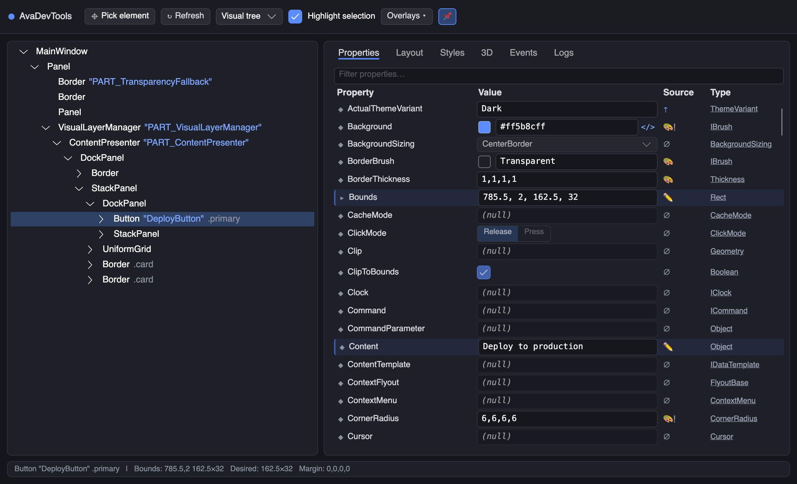
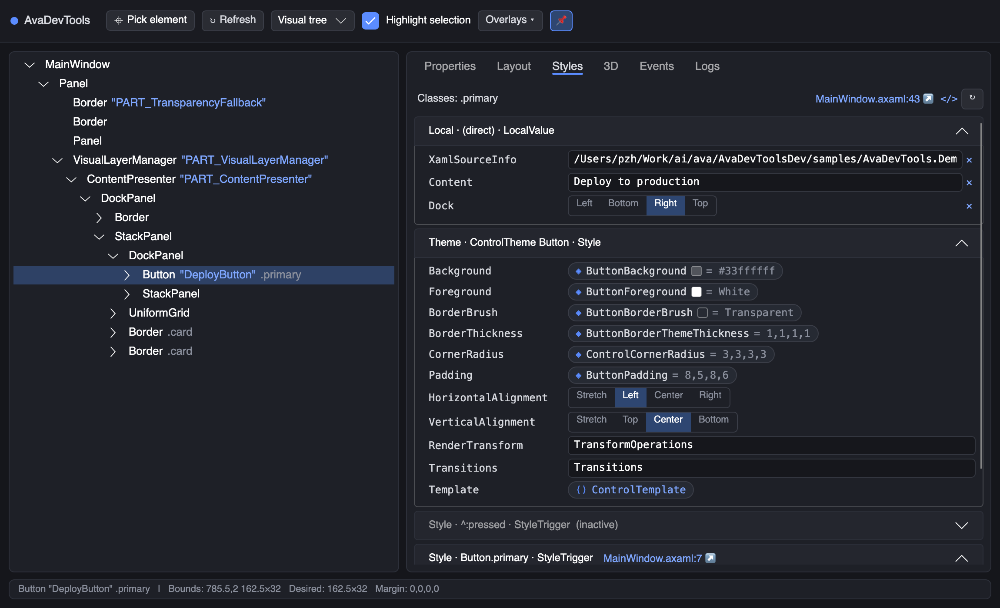
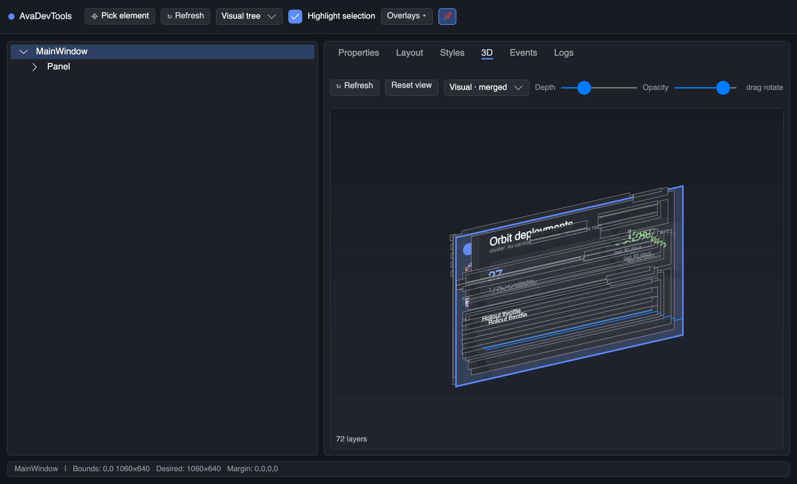
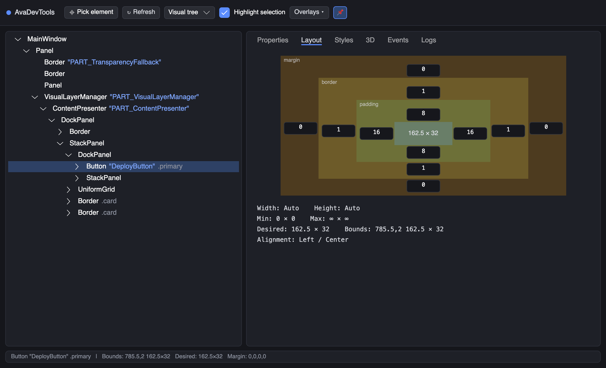
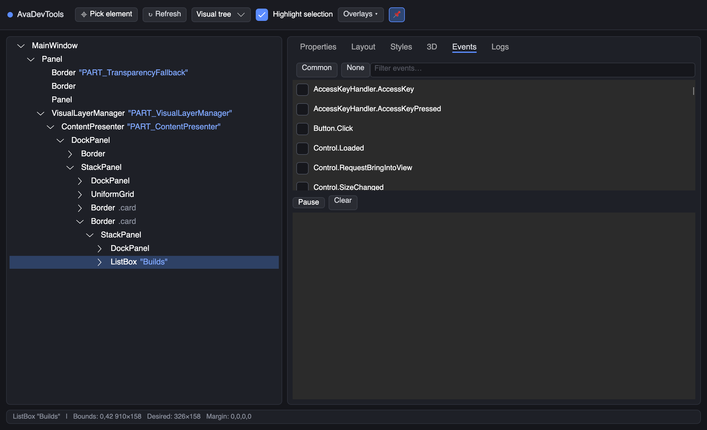

The built-in F12 tools are gone in Avalonia 12. AvaDevTools brings them back — inspector, live editors, styles, 3D view, events and logs — as a single open-source NuGet package.
Twenty seconds from F12 to fixed.

Every property of the selected element with typed editors and full provenance.

The full cascade for the element: theme, styles with selectors, template and local values.

The window exploded into textured layers from a live snapshot.

Margin, border and padding as interactive bands — edit any side in place.

Watch routed events finish routing and read Avalonia’s own logs.
Attach once, press F12 in any window.
Visual and logical tree with names and style classes, live highlight overlay with margin/padding bands, and a click-to-pick element mode.
Typed editors — checkboxes, enum dropdowns, flat segmented switches — grouped attached properties, and instant visual feedback without rebuilds.
Every Color and brush gets a swatch with a full color picker flyout. Changes apply live as you drag.
Interactive margin / border / padding bands with per-side editing, plus size, constraints and alignment at a glance.
Every applied style, theme and local value with its setters, priority and active state. Edit setter values as live local overrides.
Your window as textured layers in 3D — orbit, zoom, click to select. Visual, merged or logical tree granularity.
file:line for elements, styles, bindings and view models. Syntax-highlighted XAML/C# previews and one-click jump to your editor.
Pick routed events from the full registry and watch them finish routing: source, timestamp and final handled state.
Binding errors, layout and property-system messages — even without LogToTrace(). Filtered, batched and feedback-loop safe.
FPS meter, layout/render time graphs and dirty-rect flashing on the inspected window, one toggle away.
See whether a value is default, set by hand, styled, templated or inherited — and jump to the ancestor or the exact XAML that set it.
Compact Rider/Unity-like controls, scoped strictly to the tool window. Your application's theme is never touched.
Two lines in your App.axaml.cs — Debug builds only, nothing ships in Release.
public override void Initialize()
{
AvaloniaXamlLoader.Load(this);
#if DEBUG
this.AttachAvaDevTools(); // press F12 in any window
#endif
}